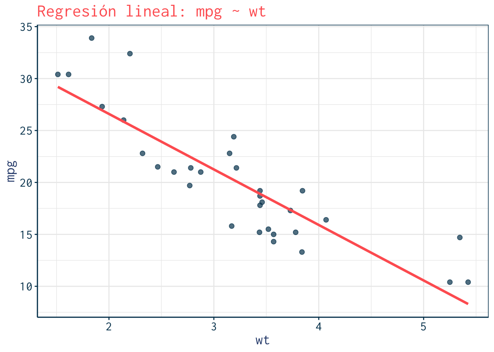
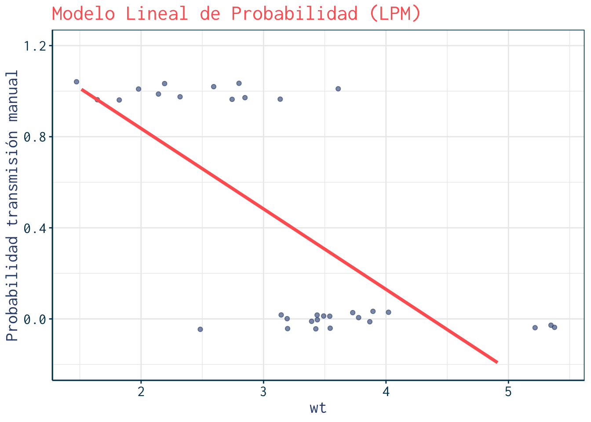
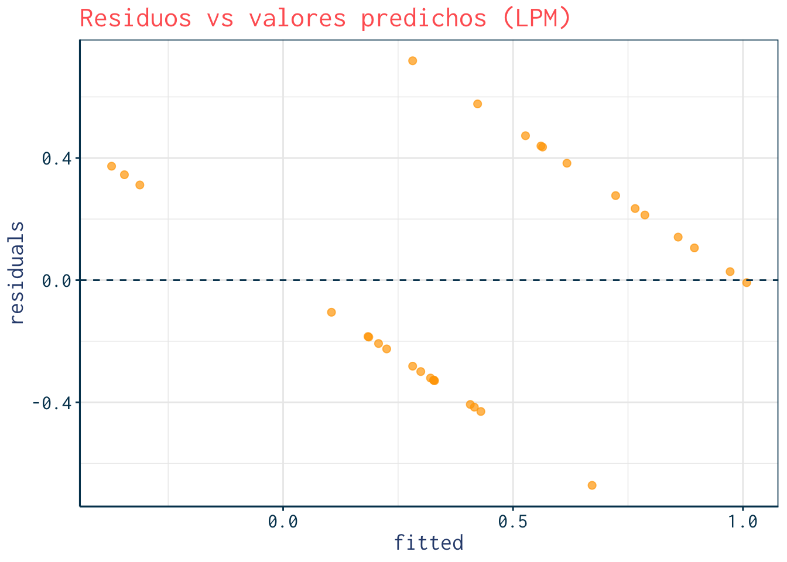

Práctica: Modelo Lineal de Probabilidad con mtcars
1. Explorar la base de datos mtcars
Code
> data(mtcars)
> mtcars <- as_tibble(mtcars)
>
> table(mtcars$am)#>
#> 0 1
#> 19 13Code
> glimpse(mtcars)#> Rows: 32
#> Columns: 11
#> $ mpg <dbl> 21.0, 21.0, 22.8, 21.4, 18.7, 18.1, 14.3, 24.4, 22.8, 19.2, 17.8,…
#> $ cyl <dbl> 6, 6, 4, 6, 8, 6, 8, 4, 4, 6, 6, 8, 8, 8, 8, 8, 8, 4, 4, 4, 4, 8,…
#> $ disp <dbl> 160.0, 160.0, 108.0, 258.0, 360.0, 225.0, 360.0, 146.7, 140.8, 16…
#> $ hp <dbl> 110, 110, 93, 110, 175, 105, 245, 62, 95, 123, 123, 180, 180, 180…
#> $ drat <dbl> 3.90, 3.90, 3.85, 3.08, 3.15, 2.76, 3.21, 3.69, 3.92, 3.92, 3.92,…
#> $ wt <dbl> 2.620, 2.875, 2.320, 3.215, 3.440, 3.460, 3.570, 3.190, 3.150, 3.…
#> $ qsec <dbl> 16.46, 17.02, 18.61, 19.44, 17.02, 20.22, 15.84, 20.00, 22.90, 18…
#> $ vs <dbl> 0, 0, 1, 1, 0, 1, 0, 1, 1, 1, 1, 0, 0, 0, 0, 0, 0, 1, 1, 1, 1, 0,…
#> $ am <dbl> 1, 1, 1, 0, 0, 0, 0, 0, 0, 0, 0, 0, 0, 0, 0, 0, 0, 1, 1, 1, 0, 0,…
#> $ gear <dbl> 4, 4, 4, 3, 3, 3, 3, 4, 4, 4, 4, 3, 3, 3, 3, 3, 3, 4, 4, 4, 3, 3,…
#> $ carb <dbl> 4, 4, 1, 1, 2, 1, 4, 2, 2, 4, 4, 3, 3, 3, 4, 4, 4, 1, 2, 1, 1, 2,…Variables usadas en el análisis
La base de datos mtcars contiene información sobre 32 modelos de automóviles. Para este ejercicio seleccionamos las siguientes variables:
am: tipo de transmisión del vehículo
- 0 = transmisión automática
- 1 = transmisión manual
Es nuestra variable dependiente binaria en el Modelo Lineal de Probabilidad (LPM).
- 0 = transmisión automática
wt: peso del vehículo en miles de libras (lb/1000).
Un mayor peso suele asociarse con menor rendimiento de combustible y puede incidir en la elección de transmisión.mpg: rendimiento del vehículo medido en millas por galón de gasolina.
Es una variable continua que usamos en la regresión lineal clásica.hp: caballos de fuerza bruta del motor.
Captura la potencia del automóvil; la usamos en interacción con el peso para evaluar si el efecto del peso sobre la probabilidad de transmisión manual cambia según la potencia.
2. Descripción inicial
Code
> mtcars %>%
+ group_by(am) %>%
+ summarise(
+ mean_mpg = mean(mpg),
+ mean_hp = mean(hp),
+ n = n(),
+ .groups="drop"
+ )#> # A tibble: 2 × 4
#> am mean_mpg mean_hp n
#> <dbl> <dbl> <dbl> <int>
#> 1 0 17.1 160. 19
#> 2 1 24.4 127. 133. Modelo lineal clásico
Relación entre peso (wt) y rendimiento (mpg).
Code
> lm_cont <- lm(mpg ~ wt, data=mtcars)
> summary(lm_cont)#>
#> Call:
#> lm(formula = mpg ~ wt, data = mtcars)
#>
#> Residuals:
#> Min 1Q Median 3Q Max
#> -4.5432 -2.3647 -0.1252 1.4096 6.8727
#>
#> Coefficients:
#> Estimate Std. Error t value Pr(>|t|)
#> (Intercept) 37.2851 1.8776 19.858 < 2e-16 ***
#> wt -5.3445 0.5591 -9.559 1.29e-10 ***
#> ---
#> Signif. codes: 0 '***' 0.001 '**' 0.01 '*' 0.05 '.' 0.1 ' ' 1
#>
#> Residual standard error: 3.046 on 30 degrees of freedom
#> Multiple R-squared: 0.7528, Adjusted R-squared: 0.7446
#> F-statistic: 91.38 on 1 and 30 DF, p-value: 1.294e-10Code
> ggplot(mtcars, aes(x=wt, y=mpg)) +
+ geom_point(color=julia$navy, size=2, alpha=0.7) +
+ geom_smooth(method="lm", se=FALSE, color=julia$coral, size=1.2) +
+ labs(title="Regresión lineal: mpg ~ wt") +
+ theme_julia()
4. Modelo Lineal de Probabilidad (LPM)
Probabilidad de transmisión manual según peso (wt).
Code
> lpm <- lm(am ~ wt, data=mtcars)
> summary(lpm)#>
#> Call:
#> lm(formula = am ~ wt, data = mtcars)
#>
#> Residuals:
#> Min 1Q Median 3Q Max
#> -0.67191 -0.32229 -0.05661 0.32002 0.71833
#>
#> Coefficients:
#> Estimate Std. Error t value Pr(>|t|)
#> (Intercept) 1.54244 0.22558 6.838 1.38e-07 ***
#> wt -0.35316 0.06717 -5.258 1.13e-05 ***
#> ---
#> Signif. codes: 0 '***' 0.001 '**' 0.01 '*' 0.05 '.' 0.1 ' ' 1
#>
#> Residual standard error: 0.3659 on 30 degrees of freedom
#> Multiple R-squared: 0.4795, Adjusted R-squared: 0.4622
#> F-statistic: 27.64 on 1 and 30 DF, p-value: 1.125e-05Code
> marginaleffects::avg_slopes(lpm)#>
#> Estimate Std. Error z Pr(>|z|) S 2.5 % 97.5 %
#> -0.353 0.0672 -5.26 <0.001 22.7 -0.485 -0.222
#>
#> Term: wt
#> Type: response
#> Comparison: dY/dXCode
> newdata <- tibble(wt = seq(min(mtcars$wt), max(mtcars$wt), length.out=100)) %>%
+ mutate(pred = predict(lpm, newdata = .))
>
> ggplot(mtcars, aes(x=wt, y=am)) +
+ geom_jitter(width=0.05, height=0.05, alpha=0.6, color=julia$teal) +
+ geom_line(data=newdata, aes(x=wt, y=pred), color=julia$coral, size=1.3) +
+ ylim(-0.2, 1.2) +
+ labs(title="Modelo Lineal de Probabilidad (LPM)",
+ y="Probabilidad transmisión manual") +
+ theme_julia()
5. Problema: predicciones fuera de rango
Code
> range(predict(lpm))#> [1] -0.3730786 1.00811746. Residuos vs predicciones (heterocedasticidad)
Code
> mtcars %>%
+ mutate(fitted = predict(lpm),
+ residuals = resid(lpm)) %>%
+ ggplot(aes(x=fitted, y=residuals)) +
+ geom_point(size=2, alpha=0.7, color=julia$orange) +
+ geom_hline(yintercept=0, linetype="dashed", color=julia$navy) +
+ labs(title="Residuos vs valores predichos (LPM)") +
+ theme_julia()
7. LPM con interacción y polinomio
Code
> lpm_complex <- lm(am ~ wt + I(wt^2) + hp + wt:hp, data=mtcars)
> summary(lpm_complex)#>
#> Call:
#> lm(formula = am ~ wt + I(wt^2) + hp + wt:hp, data = mtcars)
#>
#> Residuals:
#> Min 1Q Median 3Q Max
#> -0.61943 -0.16165 -0.03679 0.17612 0.62440
#>
#> Coefficients:
#> Estimate Std. Error t value Pr(>|t|)
#> (Intercept) 2.9144334 0.5233410 5.569 6.64e-06 ***
#> wt -1.2905219 0.3920382 -3.292 0.00278 **
#> I(wt^2) 0.1014692 0.0969854 1.046 0.30473
#> hp 0.0013034 0.0081655 0.160 0.87436
#> wt:hp 0.0005987 0.0024255 0.247 0.80691
#> ---
#> Signif. codes: 0 '***' 0.001 '**' 0.01 '*' 0.05 '.' 0.1 ' ' 1
#>
#> Residual standard error: 0.3101 on 27 degrees of freedom
#> Multiple R-squared: 0.6636, Adjusted R-squared: 0.6137
#> F-statistic: 13.31 on 4 and 27 DF, p-value: 4.085e-06Code
> marginaleffects::avg_slopes(lpm_complex)#>
#> Term Estimate Std. Error z Pr(>|z|) S 2.5 % 97.5 %
#> hp 0.00323 0.00113 2.85 0.00442 7.8 0.00101 0.00545
#> wt -0.54980 0.08713 -6.31 < 0.001 31.7 -0.72056 -0.37904
#>
#> Type: response
#> Comparison: dY/dXCode
> newdata2 <- expand.grid(
+ wt = seq(min(mtcars$wt), max(mtcars$wt), length.out=40),
+ hp = c(100, 200)
+ ) %>%
+ as_tibble() %>%
+ mutate(pred = predict(lpm_complex, newdata=.))
>
> ggplot(mtcars, aes(x=wt, y=am)) +
+ geom_jitter(width=0.05, height=0.05, alpha=0.6, color=julia$teal) +
+ geom_line(data=newdata2, aes(x=wt, y=pred, color=factor(hp)), size=1.2) +
+ scale_color_manual(values=c("100"=julia$navy, "200"=julia$orange)) +
+ ylim(-0.2, 1.2) +
+ labs(title="LPM con interacción y polinomio",
+ subtitle="Curvas para hp = 100 (navy) y 200 (orange)",
+ y="Probabilidad transmisión manual",
+ color="Caballos de fuerza") +
+ theme_julia()8. Un adelanto de lo que viene: comparación con Logit
Code
> logit <- glm(am ~ wt, data=mtcars, family=binomial)
> summary(logit)#>
#> Call:
#> glm(formula = am ~ wt, family = binomial, data = mtcars)
#>
#> Coefficients:
#> Estimate Std. Error z value Pr(>|z|)
#> (Intercept) 12.040 4.510 2.670 0.00759 **
#> wt -4.024 1.436 -2.801 0.00509 **
#> ---
#> Signif. codes: 0 '***' 0.001 '**' 0.01 '*' 0.05 '.' 0.1 ' ' 1
#>
#> (Dispersion parameter for binomial family taken to be 1)
#>
#> Null deviance: 43.230 on 31 degrees of freedom
#> Residual deviance: 19.176 on 30 degrees of freedom
#> AIC: 23.176
#>
#> Number of Fisher Scoring iterations: 6Code
> newdata <- newdata %>%
+ mutate(logit_pred = predict(logit, newdata=., type="response")) %>%
+ mutate(model="LPM")
>
> newdata_logit <- newdata %>%
+ mutate(model="Logit", logit_pred = predict(logit, newdata=., type="response"))
>
> ggplot(mtcars, aes(x=wt, y=am)) +
+ geom_jitter(width=0.05, height=0.05, alpha=0.6, color=julia$teal) +
+ geom_line(data=newdata, aes(x=wt, y=pred, color="LPM"), size=1.2, linetype="dashed") +
+ geom_line(data=newdata_logit, aes(x=wt, y=logit_pred, color="Logit"), size=1.2) +
+ scale_color_manual(values=c("LPM"=julia$coral, "Logit"=julia$orange)) +
+ ylim(-0.2, 1.2) +
+ labs(title="LPM vs Logit",
+ subtitle="Coral: LPM | Orange: Logit",
+ y="Probabilidad transmisión manual",
+ color="Modelo") +
+ theme_julia()